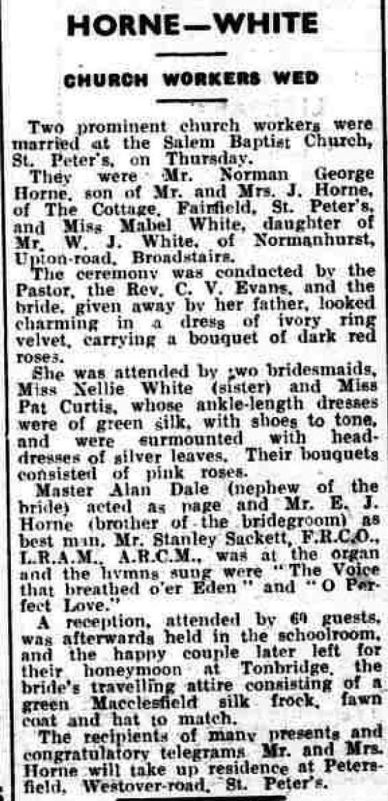
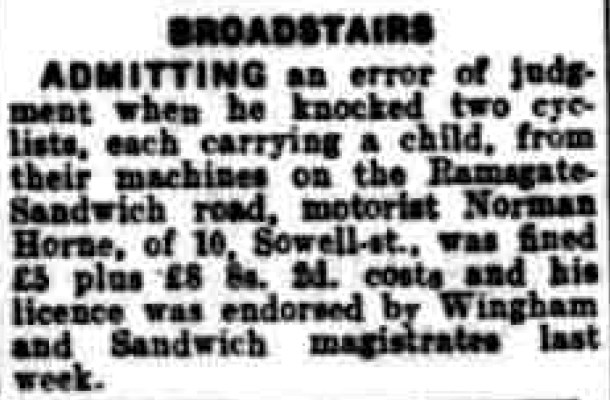
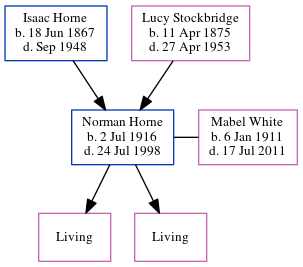

Norman George Horne 1916 - 1998
[ Home ] | [ Calendar ] | [ Surnames Index ] | [ Errors ] | [ Family History ]A painter & decorator and the younger of 2 children of Isaac Horne (a gardener domestic servant) and Lucy Stockbridge (a dressmaker), Norman Horne, the first cousin twice-removed on the father's side of Nigel Horne, was born in Broadstairs, Kent, England on 2 Jul 19161,2,3,4 and. He married Mabel White (with whom he had 2 surviving children Beryl C and Margaret J) at Salem Baptist Church, St Peters, Thanet, Kent, England on 5 Aug 19375.
During his life, he was living at The Cottage, Fairfield Road, St Peters in Thanet on 19 Jun 192111; at 8 Upton Road in Broadstairs on 29 Sept 19391 - less than a mile from his brother Edward John who was living at 29 Walmsley Road in Broadstairs; on Sowell Street, St Peters in Thanet in 19538; and at 10 Sowell Street, St Peters in Thanet in 19556, in 19639, in 19657 and in 197410.
He died on 24 Jul 1998 in Broadstairs2,4.
Parents
- Isaac was born on 18 Jun 1867
- Lucy was born on 11 Apr 1875
Citations
- 1939 Register - Findmypast (was recorded at this address)
- England & Wales deaths 1837-2007 - Findmypast
- England & Wales, Birth Index: 1916-2005 Online publication - Provo, UT, USA: The Generations Network, Inc., 2008.Original data - General Register Office. England and Wales Civil Registration Indexes. London, England: General Register Office. © Crown copyright. Published by permission of the Cont
- England & Wales, Death Index: 1984-2005 Online publication - Provo, UT, USA: The Generations Network, Inc., 2007.Original data - General Register Office. England and Wales Civil Registration Indexes. London, England: General Register Office. © Crown copyright. Published by permission of the Cont
- England & Wales Marriages 1837-2005 - Findmypast
- 1955 Kelly's Thanet Directory
- 1965 Kelly's Thanet Directory
- 1953 Kelly's Thanet Directory
- 1963 Kelly's Thanet Directory
- 1974 Kelly's Thanet Directory
- 1921 Census Of England & Wales - Findmypast (was age 4 and the son of the head of the household)
Media
Thanet Advertiser - 10 August 1937

1953 Kelly's Thanet Directory

1965 Kelly's Thanet Directory

Kentish Express - 5 Aug 1960

1953 Kelly's Thanet Directory
1963 Kelly's Thanet Directory

1974 Kelly's Thanet Directory

England & Wales births 1837-2006 - BMD/B/1916/3/AZ/000679/040
England & Wales marriages 1837-2008 - BMD/M/1937/3/AZ/000813/138
England & Wales deaths 1837-2007 - BMD/D/1998/7/82572697
1939 Register Transcription - TNA-R39-1685-1685K-027-33
1921 Census of England & Wales - GBC/1921/RG15/04458/0261/04
Family Tree
Map
Generated by ged2site. Last updated on Jul 3, 2024
Known Issues
Location for 19 Jun 1921 (The Cottage, Fairfield Road, St Peters, Thanet, Kent, England) differs from mother's (Rose Cottage, Fairfield, Thanet, Kent, England)
19 Jun 1921: Not living with either parent in childhood when aged 4
Listed in the residence for 1953, but spouse Mabel White is not
Listed in the residence for 1955, but spouse Mabel White is not
Listed in the residence for 1963, but spouse Mabel White is not
Listed in the residence for 1965, but spouse Mabel White is not
Listed in the residence for 1974, but spouse Mabel White is not